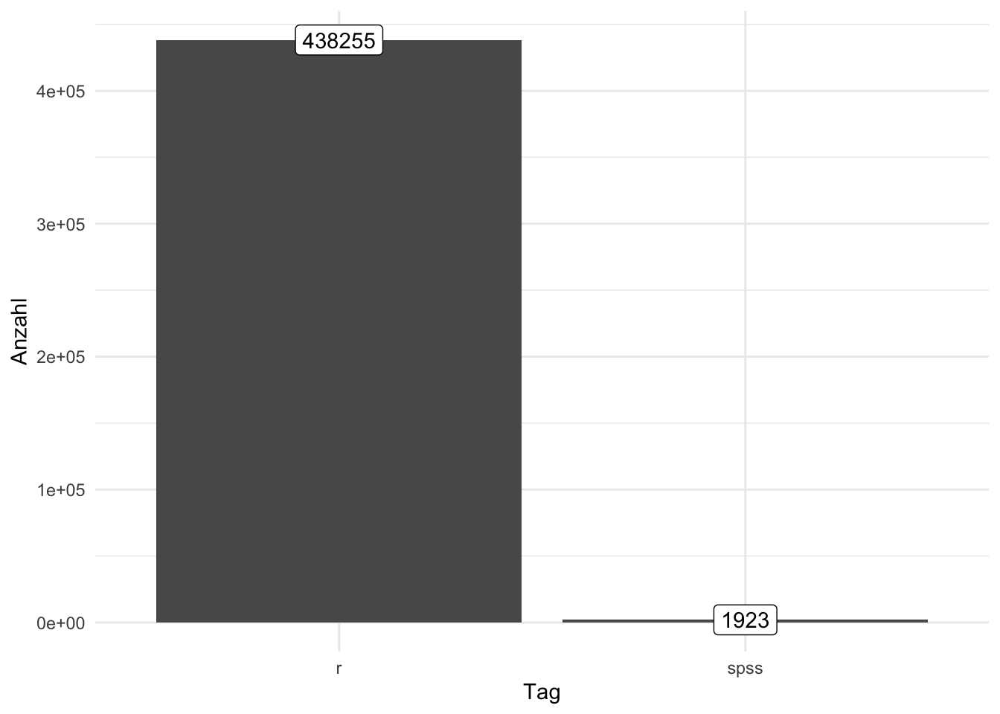

2 Daten einlesen
2.1 Lernsteuerung
2.1.1 Standort im Lernpfad
Abb. Abbildung 2.1 zeigt den Standort dieses Kapitels im Lernpfad und gibt damit einen Überblick über das Thema dieses Kapitels im Kontext aller Kapitel.
2.1.2 Standort im Lernpfad
Abb. Abbildung 2.1 zeigt den Standort dieses Kapitels im Lernpfad und gibt damit einen Überblick über das Thema dieses Kapitels im Kontext aller Kapitel.
flowchart LR
subgraph R[Rahmen]
direction LR
subgraph V[Vorbereiten]
direction TB
E[<font size=5>**Einlesen**] --> Um[Umformen]
end
subgraph M[Modellieren]
direction TB
M1[Punktmodelle] --> Vis[Verbildlichen]
Vis --> U[Ungewissheit]
U --> G[Geradenmodelle]
end
subgraph N[Nachbereiten]
direction TB
D[Antworten diskutieren]
end
V --> M
M --> N
end
2.1.3 Lernziele
- Sie können R und RStudio starten.
- Sie können R-Pakete installieren und starten
- Sie können Variablen in R zuweisen und auslesen.
- Sie können Daten in R importieren.
- Sie können den Begriff Reproduzierbarkeit definieren.
2.1.4 Überblick
Abb. Abbildung 1 zeigt Ihnen, wo auf unserer Reise durch die Datenanalyse sich dieses Kapitels verorten lässt.
2.1.5 Benötigte R-Pakete
2.1.6 Begleitvideos
Schauen Sie sich mal in dieser Playlist um, dort finden Sie einige Videos zum Thema R.
2.2 Errrstkontakt
2.2.1 Warum R?
Gründe, die für den Einsatz von R sprechen:
🆓 R ist kostenlos, andere Softwarepakete für Datenanalyse sind teuer. 💸
📖 R und R-Befehle sind quelloffen, d.h. man kann sich die zugrundeliegenden Computerbefehle anschauen. Jeder kann prüfen, ob es vernünftig arbeitet. Jeder kann beitragen.
🆕 R hat die neuesten Methoden.
🫂R hat eine große Community.
🪡 R ist maßgeschneidert für Datenanalyse.
Allerdings gibt es auch abweichende Meinungen, s. Abbildung 2.2.

2.2.2 R und Reproduziberkeit
Definition 2.1 (Reproduzierbarkeit) Ein (wissenschaftlicher) Befunde ist reproduzierbar, wenn andere Analystis mit dem gleichen experimentellen Setup zum gleichen Ergebnis (wie in der ursprünglichen Analyse) kommen (Plesser 2018). \(\square\)
Definition 2.1 ist, etwas überspitzt, in Abbildung 2.3 wiedergegeben.

Beispiel 2.1 (Aus der Forschung: Reproduzierbarkeit in der Psychologie)
🧑🎓 Wie ist es um unsere Wissenschaft, Psychologie, bestellt? Haben die Befunde Hand und Fuß?
Obels u. a. (2020) haben die Reproduzierbarkeit in psychologischen Studien untersucht. Sie berichten folgendes Ergebnis
We examined data and code sharing for Registered Reports published in the psychological literature from 2014 to 2018 and attempted to independently computationally reproduce the main results in each article. Of the 62 articles that met our inclusion criteria, 41 had data available, and 37 had analysis scripts available. Both data and code for 36 of the articles were shared. We could run the scripts for 31 analyses, and we reproduced the main results for 21 articles. \(\square\)
2.3 Architektur von R
2.3.1 R & RStudio

💖

Ismay und Kim (2020) zeigen eine schöne Analogie, was der Unterschied von R und RStudio ist, s. Abbildung 2.4.

Wir verwenden beide Programme. Aber wir öffnen nur RStudio. RStudio findet selbständig R und öffnet diese “heimlich”. Öffnen Sie nicht noch extra R (sonst wäre R zweifach geöffnet).
Hier ein Screenshot von der Oberfläche von RStudio, s. Abbildung 2.5.

2.3.2 R-Studio Cloud
RStudio Cloud ist ein Webdienst von RStudio (zum Teil kostenlos). Man kann damit online mit R arbeiten. Die Oberfläche ist praktisch identisch zur Desktop-Version, s. Abbildung 2.6. Ein Vorteil ist, dass man als Nutzer nichts installieren muss.

2.3.3 Installation
Lesen Sie hier die Installation von R und seiner Freunde nach.
2.3.4 R-Pakete
Typisch für R ist sein modularer Aufbau: Man kann eine große Zahl an Erweiterungen (“Pakete”) installieren, alle kostenlos.
In R Paketen “wohnen” Funktionen, also Dinge, die R kann, wenn das Paket verfügbar ist.
Man kann sich daher ein R-Paket vorstellen wie ein Buch: Wenn R es gelesen hat, dann kennt es die Inhalte. Diese Inhalte könnten irgendwelche Formeln, also Berechnungen sein. Es könnte aber die “Bauanleitung” für ein schönes Diagramm sein.
Ist ein spezielles R-Paket auf Ihrem Computer vorhanden, so können Sie diese Funktionalität nutzen.
Die Zahl an diesen “Paketen” ist groß; zur Verdeutlichung s. Abbildung 2.7.

Erweiterungen kennt man von vielen Programmen, sie werden auch Add-Ons, Plug-Ins oder sonstwie genannt.
Man siehe zur Verdeutlichung Erweiterungen beim Broswer Chrome, Abbildung 2.8.

Die Anzahl der R-Pakete ist groß; allein auf dem “offiziellen Web-Store” (nennt sich “CRAN”) von R gibt es ca. 20,000 Pakete (Abbildung 2.9); Stand: 2022; Quelle).

2.3.4.1 Pakete installieren
Wie jede Software muss man Pakete (Erweiterungen für R) erst einmal installieren, bevor man sie verwenden kann. Ja, einmal installieren reicht.
Das geht komfortabel, wenn man beim Reiter Packages auf Install klickt (s. Abbildung 2.10).


Dann öffnet sich ein Menü, wo man die Namen der gewünschten R-Pakete eingeben kann (s. Abbildung Abbildung 2.11).

🧑🎓Welche R-Pakete sind denn schon installiert?
Im Reiter Packages können Sie nachschauen, welche Pakete auf Ihrem Computer schon installiert sind. Diese Pakete brauchen Sie logischerweise dann nicht noch mal installieren.
🧑🎓Ja, aber welche R-Pakete “soll” ich denn installieren, welche brauch ich denn?
Im Moment sollten Sie die folgenden Pakete installiert haben:
tidyverseeasystats
Wenn Sie die noch nicht installiert haben sollten, dann können Sie das jetzt ja nachholen.
2.3.4.2 Pakete starten
Wenn Sie ein Softwareprogramm - nichts anderes sind R-Pakete - installiert haben, müssen Sie es noch starten.
Merke: Ein bestimmtes Paket muss man nur einmalig installieren. Aber man muss es jedes Mal neu starten, wenn man R (bzw. RStudio) startet.
Sie erkennen leicht, ob ein Paket gestartet ist, wenn Sie ein Häkchen vor dem Namen des Pakets in der Paketliste (Reiter Packages) sehen, s. Abbildung @ref(fig:install-packages).
Dieses Video verdeutlicht den Unterschied zwischen Installation und Starten eines R-Pakets.
2.3.5 Projekte in R
Ein Projekt in RStudio ist letztlich ein Ordner, der als “Basis” für eine Reihe von Dateien verwendet wird. Sagen wir, das Projekt heißt cool_stuff. RStudio legt uns diesen Ordner an einem von uns gewählten Platz auf unserem Computer an. Das ist ganz praktisch, weil man dann sagen kann “Hey R, nimmt die Datei ‘daten.csv’”, ohne einen Pfad anzugeben. Vorausgesetzt, die Datei liegt auch im Projektordner (cool_stuff).
Projekte kann anlegen mit Klick auf das Icon, das einen Quader mit dem Buchstaben R darin anzeigt (s. Abbildung 2.12).

2.3.6 Skriptdateien
Die R-Befehle (“Syntax”) schreiben Sie am besten in eine speziell dafür vorgesehene Textdatei in RStudio. Eine Sammlung von (R-)Befehlen nennt man auch ein Skript, daher spricht man auch von einer Skriptdatei. Um eine neue R-Skriptdatei zu öffnen, klicken Sie auf das Icon, das ein weißes Blatt mit einem grünen Pluszeichen zeigt, s. Abbildung 2.13.

Vergessen Sie nicht zu speichern, wenn Sie ein tolles Skript geschrieben haben. Dafür gibt es mehrere Möglichkeiten:
- Strg+S
- Menü: File > Save
- Klick auf das Icon mit der Diskette, s. Abbildung 2.13.
Eine Skriptdatei können Sie in typischer Manier öffnen:
- Strg+O
- Klick auf das Icon mit der Akte und dem grünen Pfeil (vgl. Abbildung 2.13)
- Menü: File > Open File…
2.4 Grundlagen von R
2.4.1 Variablen
In jeder Programmiersprache kann man Variablen definieren, so auch in R:
richtige_antwort = 42
falsche_antwort = 43
typ = "Antwort"
ist_korrekt = TRUEAlternativ zum Gleichheitszeichen = können Sie auch (synonym) den Zuweisungspfeil <- verwenden. Beides führt zum gleichen Ergebnis. Allerdings ist der Pfeil präziser, und sollte daher bevorzugt werden.
Der Zuweisungspfeil <- bzw. das Gleichheitszeichen = definiert eine neue Variable (oder überschreibt den Inhalt, wenn die Variable schon existiert).
richtige_antwort <- 42
falsche_antwort <- 43
typ <- "Antwort"
ist_korrekt <- TRUEDieses Video und dieses Video geben eine Einführung in das Definieren von Variablen in R.
Sie können sich eine Variable wie einen Becher oder Behälter vorstellen, der bestimmte Werte enthält. Auf dem Becher steht (mit Edding geschrieben) der Name des Bechers. Natürlich können Sie die Werte aus dem Becher entfernen und sie durch neue ersetzen (vgl. Abbildung 2.14).

R kann übrigens auch rechnen:
die_summe <- falsche_antwort + richtige_antwortAber was ist jetzt der Wert, der “Inhalt” der Variable die_summe?
Um den Wert, d.h. den Inhalt einer Variablen in R auszulesen, geben wir einfach den Namen des Objekts ein:
die_summe
## [1] 85Was passiert wohl, wenn wir die_summe jetzt wie folgt definieren:
die_summe <- falsche_antwort + richtige_antwort + 1Wer hätt’s geahnt:
die_summe
## [1] 86Variablen können auch “leer” sein:
alter <- NA
alter
## [1] NANA steht für not available, nicht verfügbar und macht deutlich, dass hier ein Wert fehlt.
🧑🎓 Wozu brauche ich bitte fehlende Werte?!
Fehlende Werte sind ein häufiges Problem in der Praxis. Vielleicht hat sich die befragte Person geweigert, ihr Alter anzugeben1. Oder als Sie die Daten in Ihren Computer eingeben wollten, ist Ihre Katze über die Tastatur gelaufen und alles war futsch…
2.4.2 Funktionen - “Befehle”
2.4.2.1 Vektoren
Das, was R kann, ist in “Funktionen” hinterlegt. Ein Beispiel für eine solche Funktion könnte sein: “Berechne den Mittelwert” (schauen wir uns gleich an).
Ein weiteres Beispiel für eine Funktion ist: “Erstelle eine Liste (Vektor) von Werten”.
Das geht so:
Antworten <- c(42, 43)Der Befehl c (c wie combine) fügt mehrere Werte zusammen zu einer “Liste” (einem Vektor).
Mit dem Zuweisungspfeil geben wir dieser Liste einen Namen, hier Antworten. Diese Liste besteht aus zwei Werten, zuerst 42, dann kommt 43.
2.4.2.2 Unsere erste statistische Funktion
Jetzt wird’s ernst. Jetzt kommt die Statistik. Berechnen wir also unsere erste statistische Funktion: Den Mittelwert. Puh.
mean(Antworten)
## [1] 42.5Sie hätten Antworten auch durch c(42, 43) ersetzen können, so haben Sie ja schließlich die Variable gerade definiert.
R arbeitet so einen “verschachtelten” Befehl von innen nach außen ab:
Start: mean(Antworten)
⬇️ Schritt 1: mean(c(42, 43))
⬇️ Schritt 2: 42.5
2.4.2.3 Schema einer Funktion
Abbildung 2.15 stellt eine Funktion schematisch dar.

Eine Funktion hat einen oder mehrere Inputs, das sind Daten oder Verarbeitungshinweise, die man in die Funktion fun eingibt, bevor sie loslegt. Eine Funktion hat immer (genau) eine Ausgabe (Output), in der das Ergebnis einer Funktion ausgegeben wird.
Definition 2.2 (Argumente einer Funktion) Die “Trichter” einer (R-)Funktion, in denen man die Eingaben “einfüllt”, nennt man auch Argumente.\(\square\)
So hat die Funktion mean() z.B. folgende Argumente:
mean(x, trim = 0, na.rm = FALSE, ...)
-
x: das ist der Vektor, für den der Mittelwert berechnet werden soll -
trim = 0: Sollen die extremsten Werte vonxlieber “abgeschnitten” werden, also nicht in die Berechnung des Mittelwerts einfließen? -
na.rm = FALSE: Wie soll mit fehlenden WertenNAumgegangen werden? Im Standard liefertmean2NAzurück. R schwenkt sozusagen die rote Fahne, um zu signalisieren, Achtung, Mensch, hier ist irgendwas nicht in Ordnung. Setzt man aberna.rm = TRUE, dann entfernt (remove, rm) R die fehlenden Werte und berechnet den Mittelwert. -
...heißt “sonstiges Zeugs, das manchmal eine Rolle spielen könnte”; darum kümmern wir uns nicht.
Einige Argumente haben einen Standardwert bzw. eine Voreinstellung (default). So wird bei der Funktion mean im Standard nicht getrimmt (trim = 0) und fehlende Werte werden nicht entfernt (na.rm = FALSE).
Wenn ein R-Befehl ein Argument mit Voreinstellung hat, brauchen Sie dieses Argument nicht zu befüllen. In dem Fall wird auf den Wert der Voreinstellung zurückgegriffen. Argumente ohne Voreinstellung - wie x bei mean() - müssen Sie aber auf jeden Fall mit einem Wert befüllen.
Sagen wir, wir haben einen fehlenden Wert in unseren Daten:
Antworten <- c(42, 43, NA)
Antworten
## [1] 42 43 NAWenn wir jetzt den Mittelwert berechnen wollen, quittiert R das mit einem schnöden NA:
mean(Antworten)
## [1] NAR meint es gut mit Ihnen3. Stellen Sie sich vor, dass R Sie auf dieses Problem aufmerksam machen möchte:
🤖 Achtung, lieber Herr und Gebieter, du hast nicht mehr alle Latten am Zaun, will sagen, alle Daten im Vektor!
(Danke, R.)
Möchten Sie aber lieber R dieses Verhalten austreiben, so befüllen Sie das Argument na.rm mit dem Wert TRUE.
mean(Antworten, na.rm = TRUE)
## [1] 42.5Bei jedem R-Befehl haben die Argumente eine bestimmte Reihenfolge, etwa bei mean(): mean(x, trim = 0, na.rm = FALSE, ...).
(Nur) wenn man die Argumente in ihrer vorgegebenen Reihenfolge anspricht, muss man nicht den Namen des Arguments anführen:
✅ mean(Antworten, 0, FALSE)
Hält man sic aber nicht an die vorgebene Reihenfolge, so weiß R nicht, was zu tun ist und flüchtet sich in eine Fehlermeldung:
mean(Antworten, FALSE, 0) # FALSCH, DON'T DO IT 🙅♀️
## Error in mean.default(Antworten, FALSE, 0): 'trim' must be numeric of length oneWenn man die Namen der Argumente anspricht, ist die Reihenfolge egal:
Übrigens: Leerzeichen sind R fast immer egal. Aus Gründen der Übersichtlichkeit sollte man aber Leerzeichen verwenden. In diesen Fällen sind Leerzeichen nicht erlaubt:
<--
<=etc. - Variablennamen
2.4.3 Häufige Fragen
-
Wo finde ich Hilfe zu einer bestimmten Funktion, z.B.
fun()? Geben Sie dazu folgenden R-Befehl ein:help(fun). - In welchem Paket wohnt meine R-Funktion? Suchen Sie nach der Funktion auf dieser Seite.
- Ich weiß nicht, wie der R-Befehl funktioniert? Vermutlich haben andere Ihr Problem auch, und meistens hat irgendwer das Problem schon gelöst. Am besten suchen Sie mal auf Stackoverflow.
-
Ich muss mal grundlegend verstehen, wozu ein bestimmten R-Paket gut ist. Was tun? Lesen Sie die Dokumenation (“Vignette”) eines R-Pakets durch. Für das Paket
dplyrbekommen Sie so einen Überblick über die verfügbaren Vignetten diese Pakets:vignette(package = "dplyr"). Dann suchen Sie sich aus der angezeigten Liste eine Vignette raus; mitvignette("rowwise")können Sie sich dann die gewünschte Vignette (z.B.rowwise) anzeigen lassen.
2.5 Daten importieren
2.5.1 Wo sind meine Daten?
Damit Sie eine Datendatei importieren können, müssen Sie wissen, wo die Datei ist.
Schauen wir uns zwei Möglichkeiten an, wo eine Datei liegen könnte.
- Irgendwo im Internet, z.B. hier
- Irgendwo auf Ihrem Computer, z.B. in Ihrem Projektordner
In beiden Fällen wird der “Aufenthaltsort” der Datei durch den Pfad (in welcher Ordnerhierarchie?) und den Namen definiert.
2.5.2 Gebräuchliche Formate
Daten werden in verschiedenen Formaten im Computer abgespeichert; Tabellen häufig als
- Excel-Datei
- CSV-Datei
In der Datenanalyse ist das gebräuchlichste Format für Daten in Tabellenform die CSV-Datei. Das hat den Grund, weil dieses Format technisch schön einfach ist. Für uns Endverbraucher tut das nichts groß zur Sache, die CSV-Datei beherbergt einfach eine brave Tabelle in einer Textdatei, sonst nichts.
🏋️♀️ Öffnen Sie mal eine CSV-Datei mit einem Texteditor (nicht mit Word und auch nicht mit Excel). Schauen Sie sich gut an, was Sie dort sehen und erklären Sie die Datenstruktur.
2.5.3 Einlesen aus einem R-Paket
Ihr Datensatz schon in einem R-Paket gespeichert, können Sie ihn aus diesem R-Paket starten. Das ist die bequemste Option. Zum Beispiel “wohnt” der Datensatz mariokart im R-Paket openintro.
Ein häufiger Fehler ist, dass man vergisst, dass man zuerst ein R-Paket installieren muss, bevor man es nutzen kann. Auf der anderen Seite muss man ein R-Paket (wie andere Software auch) nur ein Mal installieren - das Paket muss man ein Paket nach jedem Neustart von RStuio mit library() starten.
data("mariokart", package = "openintro")2.5.4 Einlesen von einer Webseite
So importieren Sie eine Tabelle von einer Webseite (URL) in R:
Schauen wir uns die R-Syntax en Detail an:
Hey R,
hol das "Buch" easystats aus der Bücherei und lies es
definiere als "d" die Tabelle,
die du unter der angegebenen URL findest.Es ist egal, welchen Namen Sie der Tabelle geben. Ich nehme oft d, d die Daten. Außerdem ist es kurz, muss man nicht so viel tippen.
Werfen wir einen Blick in die Tabelle (engl. to glimpse):
glimpse(d)
## Rows: 143
## Columns: 12
## $ id <dbl> 150377422259, 260483376854, 320432342985, 280405224677, 17…
## $ duration <int> 3, 7, 3, 3, 1, 3, 1, 1, 3, 7, 1, 1, 1, 1, 7, 7, 3, 3, 1, 7…
## $ n_bids <int> 20, 13, 16, 18, 20, 19, 13, 15, 29, 8, 15, 15, 13, 16, 6, …
## $ cond <fct> new, used, new, new, new, new, used, new, used, used, new,…
## $ start_pr <dbl> 0.99, 0.99, 0.99, 0.99, 0.01, 0.99, 0.01, 1.00, 0.99, 19.9…
## $ ship_pr <dbl> 4.00, 3.99, 3.50, 0.00, 0.00, 4.00, 0.00, 2.99, 4.00, 4.00…
## $ total_pr <dbl> 51.55, 37.04, 45.50, 44.00, 71.00, 45.00, 37.02, 53.99, 47…
## $ ship_sp <fct> standard, firstClass, firstClass, standard, media, standar…
## $ seller_rate <int> 1580, 365, 998, 7, 820, 270144, 7284, 4858, 27, 201, 4858,…
## $ stock_photo <fct> yes, yes, no, yes, yes, yes, yes, yes, yes, no, yes, yes, …
## $ wheels <int> 1, 1, 1, 1, 2, 0, 0, 2, 1, 1, 2, 2, 2, 2, 1, 0, 1, 1, 2, 2…
## $ title <fct> "~~ Wii MARIO KART & WHEEL ~ NINTENDO Wii ~ BRAND NEW …Hier findet sich eine Erklärung des Datensatzes.

2.5.5 Importieren von Ihrem Computer
Stellen Sie zuerst sicher, dass sich die Datendatei in Ihrem RStudio-Projektordner befindet. Dann können Sie die Datei einfach so importieren:
d <- data_read("mariokart.csv")Dieses Video erklärt die Schritte des Importierens einer Datendatei von Ihrem Computer.
Es gibt verschiedene Formate, in denen (Tabellen-)Dateien in einem Computer abgespeichert werden. Die gebräuchlichsten sind CSV und Excel. Praktischerweise kann der R-Befehl data_read() viele verschiedene Formate automatisch einlesen, so dass wir uns nicht weiter um das Format kümmern brauchen.
2.6 Logikprüfung
🧑🎓 Wer will schon wieder wen prüfen?!
In diesem Abschnitt schauen wir uns Logikprüfungen an: Wir lassen R prüfen, ob eine Variable einen bestimmten Wert hat oder größer/kleiner als ein Referenzwert ist.
Definieren wir zuerst eine Variable, x.
x <- 42Dann fragen wir R, ob diese Variable den Wert 42 hat.
x == 42
## [1] TRUE🤖 Hallo, Mensch. Ja, diese Variable hat den Wert R.
(Danke, R.)
Möchte man mit R prüfen, ob eine Variable x einen bestimmten Wert (“Inhalt”) hat, so schreibt man:
x == Wert.
Man beachte das doppelte Gleichheitszeichen! Zur Prüfung auf Gleichheit muss man das doppelte Gleichheitszeichen verwenden.
Ein beliebter Fehler ist es, bei der Prüfung auf Gleichheit, nur ein Gleichheitszeichen zu verwenden, z.B. so: x = 73. Mit einem Gleichheitszeichen prüft man aber nicht auf Gleichheit, sondern man definiert die Variable, s. Kapitel 2.4.1.
Prüfungen mit dem logischen UND bzw. ODER sind in (XXX?) erläutert.
Tabelle 2.1 gibt einen Überblick über wichtige Logikprüfungen in R.
| Prüfung.auf | R-Syntax |
|---|---|
| Gleichheit | x == Wert |
| Ungleichheit | x != Wert |
| Größer als Wert | x > Wert |
| Größer oder gleich Wert | x >= Wert |
| Kleiner als Wert | x < Wert |
| Kleiner oder gleich Wert | x <= Wert |
| Logisches UND | (x < Wert1) & (x > Wert2) |
| Logisches ODER | (x < Wert1) | (x > Wert2) |
2.7 Praxisbezug
🧑🎓Wird R in der Praxis wirklich genutzt? Oder ist R nur der Traum von (vielleicht verwirrten) Profs im Elfenbeinturm?
Schauen wir uns dazu die Suchanfragen bei stackoverflow.com an, dem größten FAQ-Forum für Software-Entwicklung. Wir vergleichen Suchanfragen mit dem Tag [r] zu Suchanfragen mit dem Tag [spss]5. Die Ergebnisse sind in Abbildung Abbildung 2.16 dargestellt.

Das ist grob gerechnet ein Faktor von 200 (der Unterschied von R zu SPSS). Dieses Ergebnis lässt darauf schließen, dass R in der Praxis viel mehr als Excel gebraucht wird.
🧑🎓 Aber ist R wirklich ein Werkzeug, das mir im Job hilft?
Viele Firmen weltweit nutzen R zur Datenanalyse, wie diese Liste zeigt.
👨🏫 R ist der Place-to-be für die Datenanalyse.
🧑🎓 Aber ist Datenanalyse wirklich etwas, womit ich in Zukunft einen guten Job bekomme?
Berufe mit Bezug zu Daten, Datenanalyse oder, allgemeiner, Künstlicher Intelligenz (artificial intelligence) gehören zu den am meisten wachsenden Berufen:
Artificial intelligence (AI) continues to make a strong showing on our Emerging Jobs lists, which is no surprise. Many jobs that have risen up as a result of AI in fields like cybersecurity and data science and because it’s is so pervasive many roles may demand more knowledge of AI than you may think. For example, real estate and business development roles. Quelle: LinkedIn
2.8 Aufgaben
2.9 Vertiefung
Sie können bei LinkedIn ein Zertifikat bekommen, das Ihre R-Kenntnisse dokumentiert. Praktischerweise wird das Zertifikat gleich Ihrem Profil zugeordnet.
Suchen Sie ein schönes Meme zum Thema Statistik, Datenanalyse und Data Science. Hier ist ein Startpunkt.
Das Kombinieren von Funktionen kann kompliziert werden:
Die Funktion abs(x) gibt den (Absolut-)Betrag von x zurück (entfernt das Vorzeichen, mit anderen Worten).
2.10 Literaturhinweise
“Warum R? Warum, R?” heißt ein Kapitel in Sauer (2019), das einiges zum Pro und Contra von R ausführt. In Kapitel 3 in der gleichen Quelle finden sich viele Hinweise, wie man R startet; In Kapitel 4 werden Grundlagen von “Errisch” erläutert; Kapitel 5 führt in Datenstrukturen von R ein (schon etwas anspruchsvoller). Alternativ bietet Kapitel 1 von Ismay und Kim (2020) einen guten Überblick.